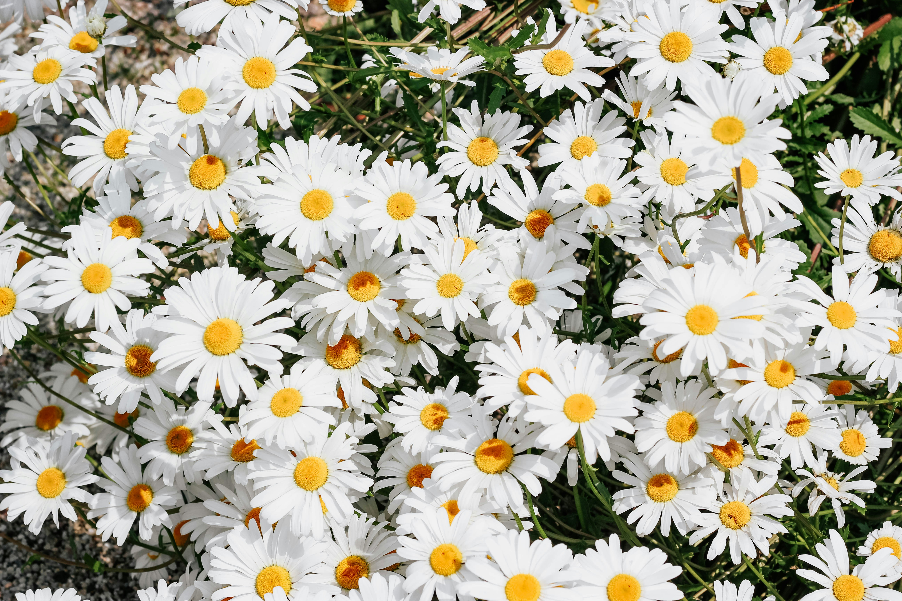

Welcome to the world of flowers, where nature's beauty blossoms in countless forms! Flowers have captivated humanity for centuries, not only for their stunning appearances but also for their fascinating biology and cultural significance.
Did you know that there are over 400,000 flowering plant species, each with its unique characteristics and adaptations? A few of them include:
Ancient History:Roses date back to 35 million years ago. The oldest living rose is 1,000 years old, and it lives on the wall of the Cathedral of Hildesheim in Germany
Symbolism: Roses are often symbols of love and romance. Different colors convey various meanings: red for love, white for purity, yellow for friendship, and pink for admiration.
Fragrance: The scent of roses comes from volatile oils released from the petals. Some species, like the Damask rose, are particularly prized for their fragrance.
Medicinal Uses: Historically, roses have been used in traditional medicine for their anti-inflammatory and antiseptic properties. Rose oil is also used in aromatherapy.
Thorns: The thorns on rose stems help protect the plant from herbivores, although not all rose species have thorns.
Sunflowers
Height: Sunflowers can grow impressively tall, with some varieties reaching heights of over 10 feet (3 meters) or more!
Flower Structure: What appears to be a single flower is actually a cluster of hundreds or thousands of tiny flowers called florets, arranged in a spiral pattern.
Seeds:Sunflowers produce seeds in the center of their heads, and a single sunflower can contain up to 2,000 seeds.
Cultural Symbolism:In many cultures, sunflowers symbolize adoration, loyalty, and longevity. They are often associated with positivity and happiness.
Edible Parts:Besides seeds, the petals and leaves of sunflowers are also edible and can be used in salads or as garnishes.
Hydrangea
They have more than 75 species and 600 cultivated varieties and change color between white, blue, and pink based on the acidity or alkalinity of the soil.
Color Change: The color of hydrangea flowers can change based on the soil pH. Acidic soils (pH below 6) tend to produce blue flowers, while alkaline soils (pH above 7) often result in pink flowers.
Diverse Species: There are about 75 species of hydrangeas, with many hybrids and cultivars available, showcasing a wide range of colors, sizes, and growth habits.
Blooming Season: Most hydrangeas bloom in late spring to summer, depending on the species and climate. Some varieties can even bloom in the fall.
Symbolism: In the language of flowers, hydrangeas can symbolize gratitude, heartfelt emotions, and understanding, making them popular in bouquets and arrangements.
Historical Uses:Hydrangeas were first discovered in Japan and have been cultivated for centuries. They became popular in Europe in the 18th century.
Daisy

Symbolism:Daisies often symbolize innocence, purity, and new beginnings. They are commonly associated with childhood and playfulness.
Medicinal Uses:Traditionally, some species of daisies have been used in herbal medicine for their anti-inflammatory and wound-healing properties.
Cultural Significance:Daisies have been featured in art and literature throughout history, often representing purity and simplicity. They are also commonly used in bridal bouquets.
Longevity: Daisies can bloom for several months, especially if spent flowers are regularly deadheaded. Some varieties can return year after year as perennials.
Edibility:The flowers and leaves of some daisies are edible and can be used in salads or as garnishes, adding a touch of color to dishes.
Periwinkle
Evergreen Foliage:Periwinkle has glossy, dark green leaves that remain evergreen, providing year-round color and texture in gardens.
Flower Color:The flowers are typically blue or violet, although some varieties may have white or pink blooms. They usually appear in spring and can continue to bloom intermittently throughout the summer.
Medicinal Uses:Historically, periwinkle has been used in traditional medicine for its potential benefits. The plant contains compounds like vinca alkaloids, which have been studied for their anti-cancer properties.
Low Maintenance:Periwinkle is drought-tolerant and low-maintenance, making it a popular choice for gardeners looking for resilient plants.
Symbolism:In the language of flowers, periwinkle can symbolize friendship, love, and affection, often used in floral arrangements for sentimental occasions.

{kind=link}